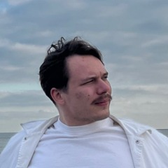
Люблю разбираться, как вещи устроены изнутри, — от весовых матриц до волновых редукторов. Последние полтора года строю TranslateTube: продукт, GPU-инфраструктура и приложения в одних руках. Сейчас ищу команду, в которой буду расти дальше — в сторону обучения больших моделей, RL и роботов.
Сервис, который переводит и переозвучивает видео с сохранением характера голоса. Построен одним инженером: продукт, инфраструктура, приложения, биллинг. Сооснователь и техдиректор.
translatetube.io · расширение в Chrome Web Store — бейдж «Featured», 10 000+ установок · приложение в Google Play — можно потрогать самому
Пользовательские цифры и графики — срез внутренней аналитики за февраль–май 2026, не сегодняшние; загрузка «в моменте» — текущий рабочий режим.
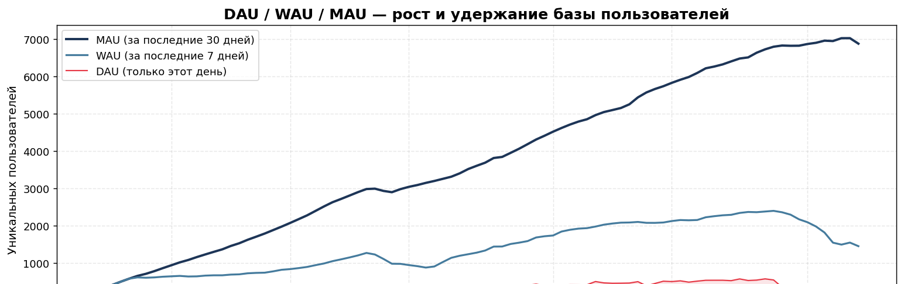
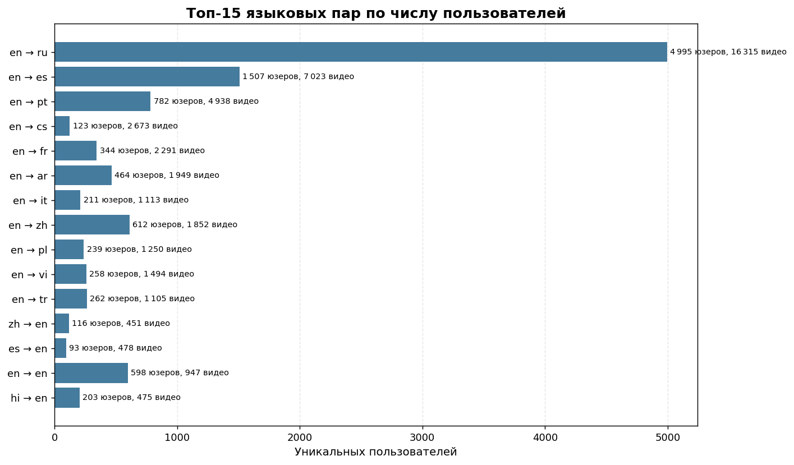
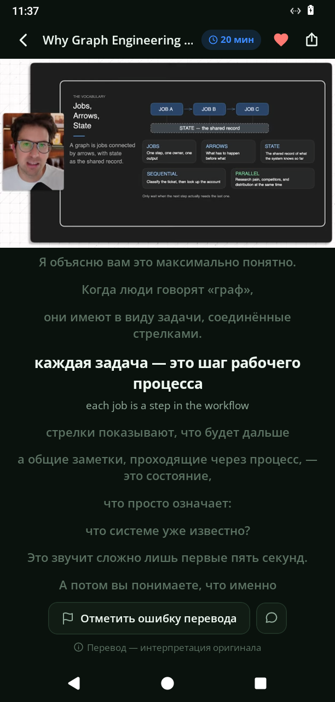
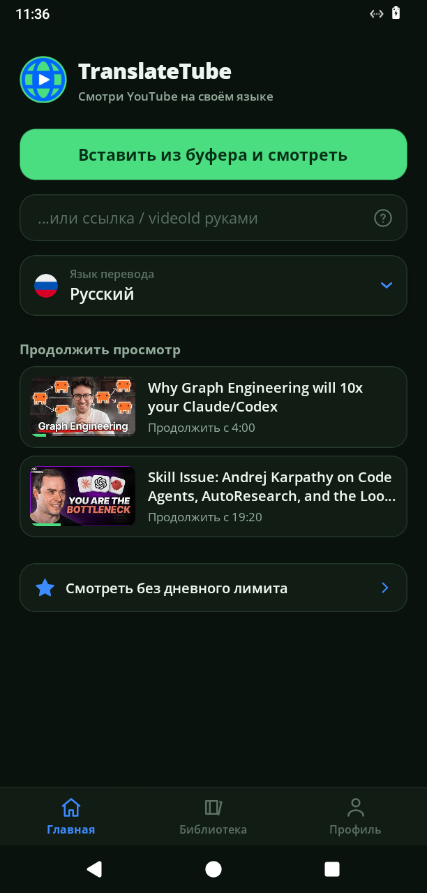
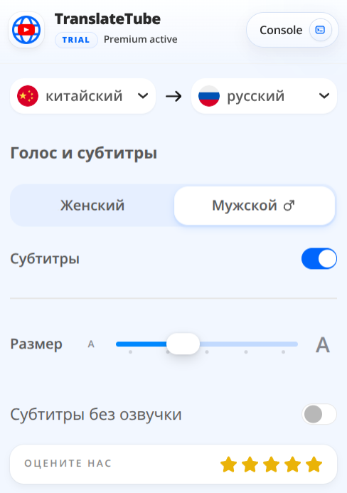
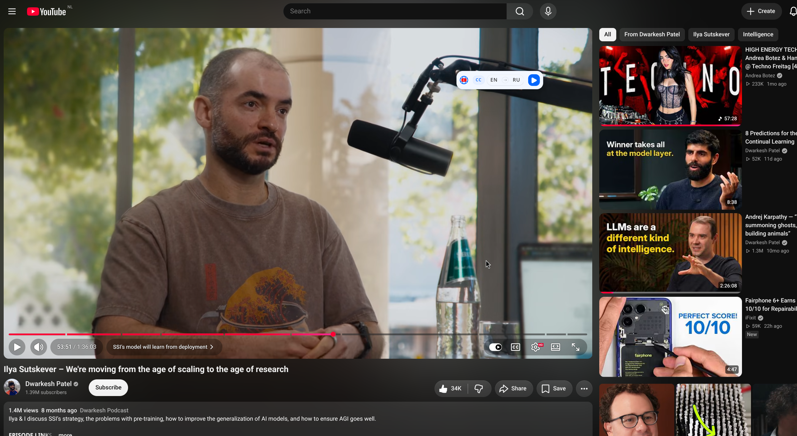
Схема — контур системы; устройство конвейера обработки подробно разбираю на созвоне.
Цель проекта — понять роботов изнутри, а не по статьям: собрал манипулятор с нуля и прошёл руками весь стек. Волновые редукторы собственной конструкции (на практике разобрался в основных схемах редукции, которые сейчас в ходу), тросовые приводы, FOC-контроллеры на базе SimpleFOC, BLDC-моторы от дронов, стереозрение с картой глубины; управление — дообучение VLA-модели на собственном форке LeRobot.
Итог серии экспериментов — осознанно простейшая архитектура: зубчатые шестерни, максимум КПД и надёжности, точность — достаточная для ИИ-управления. Рабочий вывод: роботу под обученной политикой важно выполнение задачи, а не изощрённая механика, и при масштабировании дешевизна актуатора критична. Прототипы печатные — для скорости итераций.
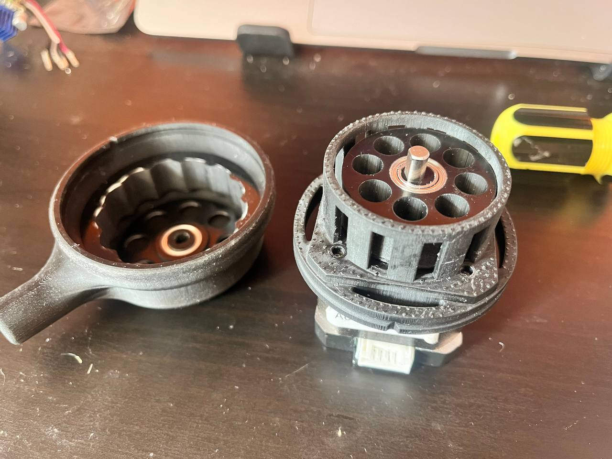
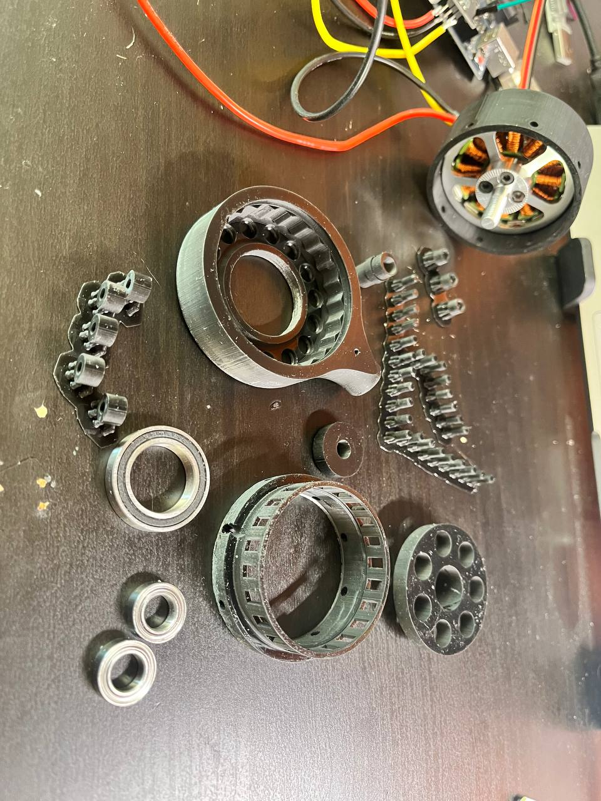
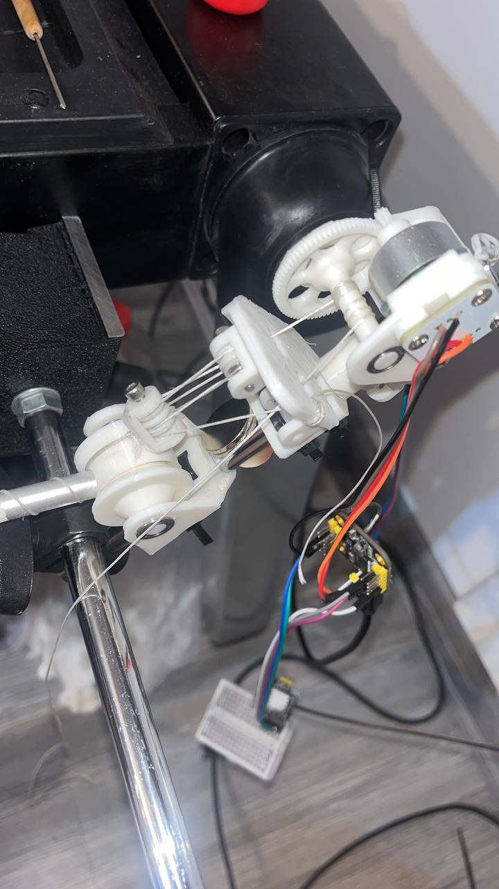
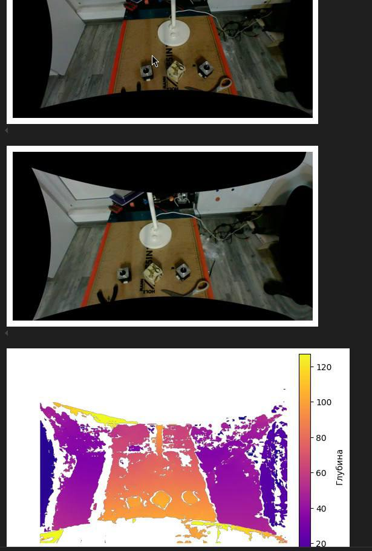
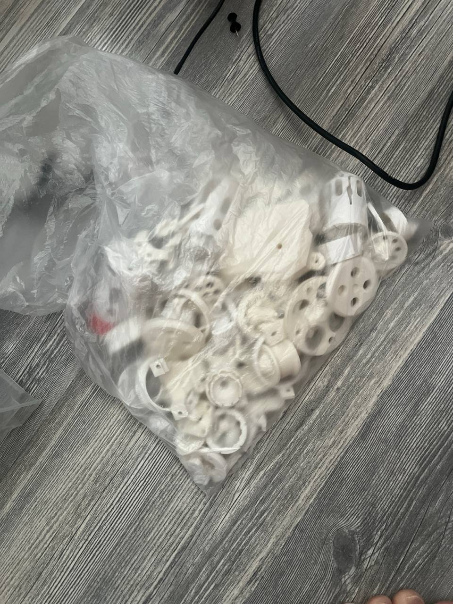
Кадры — из архива разработки.
Система помощи управления: человек задаёт направление простой командой, обученный агент берёт на себя остальное — объезд препятствий и выбор траектории. Замысел — дать людям с нарушениями моторики (ДЦП, болезнь Паркинсона) больше самостоятельности.
Внутри: GPU-симуляция на JAX/Brax и Genesis — от тысяч до десятков тысяч параллельных сред на обычном ноутбуке; собственная реализация PPO на JAX; поверх — Diffusion Policy на собранных траекториях; восприятие — стереозрение, облако точек, эффективная пространственная 3D-сетка. Код открыт.
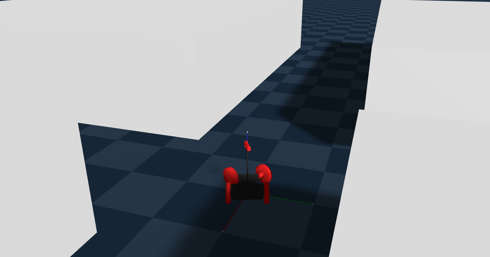
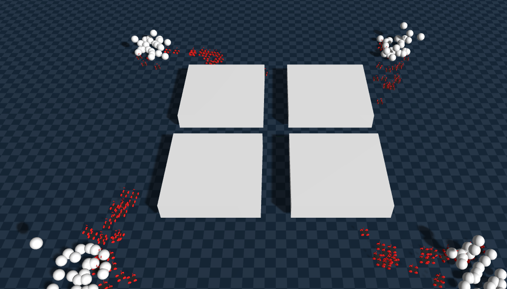